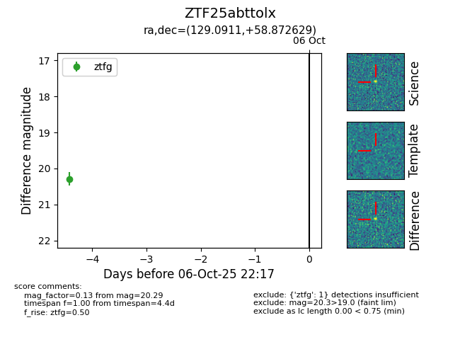

FINK: ZTF25abttolx
Lasair: ZTF25abttolx
ALeRCE: ZTF25abttolx
ZTF25abttolx (ztf,fink)
equatorial (ra, dec) = (129.0911,+58.87263)
galactic (l, b) = (158.1189,+36.41885)

last ztfg=20.29
1 ztfg detections